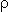

The net magnetization vector begins to precess about the +Z axis.
The magnitude of the vector also decays with time.
The net magnetization vector begins to precess about the +Z axis.
The magnitude of the vector also decays with time.
A timing diagram is a multiple axis plot of some aspect of a pulse sequence versus time. A timing diagram for a 90-FID pulse sequence has a plot of RF energy versus time and another for signal versus time.


When this sequence is repeated, for example when signal-to-noise improvement is needed, the amplitude of the signal after being Fourier transformed (S) will depend on T1 and the time between repetitions, called the repetition time (TR), of the sequence. In the signal equation below, k is a proportionality constant and  is the density of spins in the sample.
Here a 90o
pulse is first applied to the spin system.
The 90o
degree pulse rotates the magnetization down into the X'Y' plane. The transverse magnetization begins to dephase.
At some point in time after the 90o pulse, a
180o pulse is applied.
This pulse rotates the magnetization by 180o about the X' axis.
The 180o
pulse causes the magnetization to at least partially rephase and to produce a signal called an echo.
A timing diagram shows the relative positions of the two radio frequency pulses and the signal.
The signal equation for a repeated spin echo sequence as a function of the repetition time, TR, and the echo time (TE) defined as the time between the 90o pulse and the maximum amplitude in the echo is
The magnetization undergoes spin-lattice relaxation and returns toward its equilibrium position along the +Z axis.
Before it reaches equilibrium, a 90o pulse is applied which rotates the longitudinal magnetization into the XY plane. In this example, the 90o pulse is applied shortly after the 180o pulse.
Once magnetization is present in the XY plane it rotates about the Z axis and dephases giving a FID.
Once again, the timing diagram shows the relative positions of the two radio frequency pulses and the signal.
The signal as a function of TI when the sequence is not repeated is
It should be noted at this time that the zero crossing of this function occurs for TI = T1 ln2.
Copyright © 1997-2017 J.P. Hornak.
All Rights Reserved.